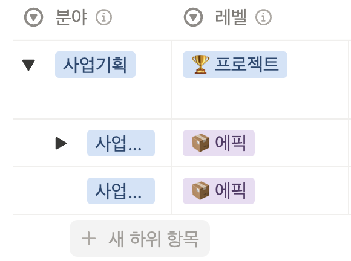
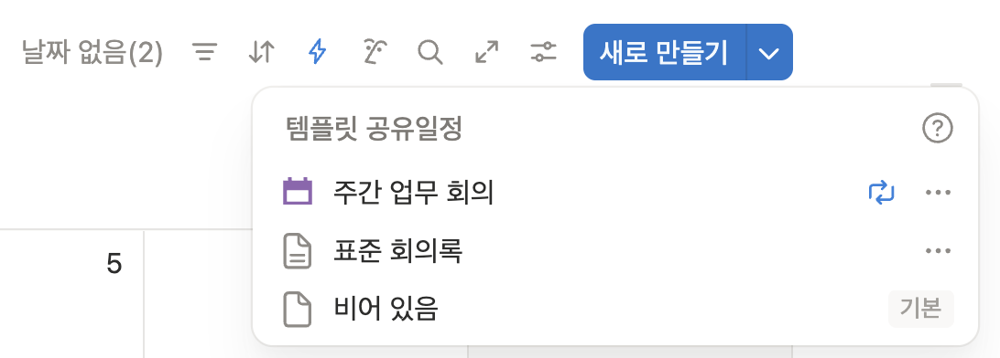

2026년 3월 24일 기준
| 뷰 이름 | 용도 |
|---|---|
| 타임라인 | 시작일~마감일 기간으로 일정 흐름 시각화 |
| 분야별 | 사업기획·사업운영 등 카테고리 그룹핑 |
| 내 프로젝트 | 내가 담당자인 항목만 필터 |
| 뷰 이름 | 용도 |
|---|---|
| 전체 | DB에 있는 모든 업무를 한 번에 볼 때 |
| 전체(빈값확인) | 필수값이 빠진 항목을 확인할 때 |
| 내 담당 | 오늘 내가 해야 할 일을 우선순위·마감일 순으로 정리할 때 |
| 칸반보드 | 프로젝트 진행 흐름을 시작전→진행중→완료 단계별로 파악할 때 |
| 담당자별 | 팀원별 업무 분배 현황을 확인할 때 |
| 프로젝트 현황 | 큰 방향 단위로 진행률을 점검할 때 |
| 에픽 현황 | 작업 묶음 단위로 진행률을 점검할 때 |
| 태스크 현황 | 세부 할 일의 완료 여부를 빠르게 체크할 때 |
| 첨부파일 있는 프로젝트 | 관련 자료가 붙어있는 업무만 모아볼 때 |
노션에서 Team Business 대시보드를 열어요. 이 페이지가 모든 것의 시작이에요.
🥊 프로젝트 섹션에서 "내 담당" 뷰를 클릭하면 내가 담당자로 지정된 항목만 보여요. 매일 아침 이 뷰로 하루를 시작하세요.
(내 개인 페이지에서 시작할 수도 있어요. 개인 페이지 안에서 필터·정렬 등 보기 뷰는 자유롭게 원하는 대로 바꿔가며 사용할 수 있어요.)
+ 새로 만들기를 눌러 항목을 추가해요.
자동으로 채워지는 값 (생성 후 변경 가능)
→ 담당자 · 시작일 · 진행상태 (기본값: 시작 전)
직접 입력해야 하는 값
→ 레벨 (🏆 프로젝트 / 📦 에픽 / ✅ 태스크 중 선택)
→ 분야 (사업기획 / 사업운영 / 주류사업 등)
→ 우선순위 (P1~P4 중 선택)
→ 마감일
진행률은 체크박스 기준으로 집계돼요. 완료된 태스크는 반드시 체크를 표시해서 완료 처리해주세요.
세부 진행상태는 상태값(진행 중 / 보류 / 완료 등)으로 표시하면 돼요.
팀 전체가 알아야 하는 일정은 📅 공유일정에 추가해요.
회의 시작 전 녹음 버튼을 눌러 진행하고, 미팅이 끝나면 완료 여부를 체크해주세요.
매주 월요일 오전 9시 30분에 주간회의록이 해당 날짜 공유일정 페이지에 자동으로 생성돼요.
주요 논의 내용과 액션 아이템을 기록해요.
대시보드 🥊 프로젝트 섹션 → 내 프로젝트 탭 클릭
내가 담당자인 항목만 즉시 확인할 수 있어요.
분야별 탭으로 전환하면 사업기획·주류사업 등 업무 카테고리 기준으로 묶어서 볼 수 있어요.
더 상세하게 보려면 프로젝트 바로가기 클릭 → 내 담당 뷰
우선순위(P1→P4)·마감일 기준으로 자동 정렬된 내 전체 업무가 한눈에 보여요.
개인 페이지에서는 필터·정렬을 자유롭게 바꿔가며 나만의 뷰로 커스텀할 수 있어요.
대시보드 🥊 프로젝트 섹션에서 프로젝트 추가하기 클릭
레벨이 🏆 프로젝트로 고정된 페이지가 생성돼요. [직접 진행] 업무명 템플릿이 자동 적용돼요.
페이지 열어서 제목·분야·우선순위·마감일 입력
담당자·시작일·진행상태는 자동으로 채워져 있어요. 필요하면 변경할 수 있어요.
에픽 추가하기 클릭 → 예시. OO 에픽 생성
프로젝트 또는 에픽 페이지 안에서 새 하위 항목 추가를 클릭해 에픽·태스크를 만들면, 상위 항목의 진행률에 자동 반영돼요.

태스크 추가하기(직접 진행) 또는 태스크 추가하기(요청) 클릭
상위 항목에 에픽을 연결해 두면, 완료 시 완료여부 체크박스 하나로 에픽·프로젝트 진행률까지 한번에 올라가요.
태스크 추가하기(요청) 클릭
레벨이 ✅ 태스크로 고정된 페이지가 생성돼요. [요청] 업무명 템플릿에는 직접 진행과 달리 제약사항 섹션이 포함돼요.
템플릿에 해당하는 배경·요청 범위·마감 이유를 적어서 함께 전달하면
받는 사람이 맥락을 빠르게 파악할 수 있어요.
대시보드 📅 공유일정 섹션 → 일정 추가 버튼 클릭
날짜·참여자·태그(외부미팅)·장소 등 기본적인 정보를 입력해둬요.
달력 뷰로 전환하면 팀 전체 일정을 월·주 단위로 한눈에 확인할 수 있어요.
미팅 당일, 회의 시작 전 녹음 버튼을 눌러 진행해요.
회의가 끝나면 해당 공유일정 페이지 안에 회의록 기록을 중지하고 일정 완료여부 체크
"11일 미팅 회의록 어디 있지?" → 11일 공유일정 페이지 안을 확인하면 돼요.
새로만들기 옆 버튼을 눌러 원하는 템플릿으로 생성할 수도 있어요.

대시보드 타임라인 탭 → 시작일~마감일 기간으로 프로젝트·에픽 일정 흐름을 시각적으로 파악해요.
프로젝트 DB → 프로젝트 현황 뷰 → 프로젝트별 진행률 한눈에 확인
칸반보드 뷰 → 진행상태(시작전·진행중·완료·보류) 컬럼별로 프로젝트 현황을 시각화해요.
담당자별 뷰 → 팀원별로 어떤 업무가 얼마나 있는지 확인해요.
전체(빈값확인) 뷰 → 우선순위·담당자·시작일·마감일 중 하나라도 비어있는 항목이 표시돼요.
주기적으로 확인해서 빈값을 채워주세요.
공유자료실 섹션 → 자료 추가 버튼 클릭
파일/링크·한줄요약·분야·자료유형·사업부를 입력해요. 한줄요약을 잘 써두면 나중에 찾기 훨씬 편해요.
자료를 찾을 때는 목적에 맞는 뷰를 골라요
사업부별 BD·LB·Tech 기준 ·
분야별 마케팅·영업 등 ·
자료유형별 아티클·레퍼런스·영상 등
자주 참고하는 자료는 즐겨찾기에 나를 추가 → 내 즐겨찾기 뷰에서 바로 접근할 수 있어요.